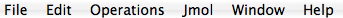

| File | |
| New... | Open the NewWizards dialog for constructing new BioResources that will be placed in the current selected folder of the BioResource Navigator |
| Save | Save the contents in the active editor |
| Save as... | Open the "Save as..." dialog for the active editor and allow for customized saving of the contents e. g. new name, format etc. |
| Save all | Save all editors with unsaved content |
| Revert | Revert to latest saved version |
| Import... | |
| Export... | |
| Log out | |
| Log in | |
| Exit | Exit Bioclipse |
| Edit | |
| Undo | Undo last action |
| Redo | Redo the last undone action |
| Cut | Cut the selection and place it in the clipboard |
| Copy | Copy the selection and place it in the clipboard |
| Paste | Paste from clipboard to selected part |
| Select all | Select all objects/content in the current window |
| Find/Replace | For text editors: open the find and replace dalog for search- and replacement of text |
| Find next | Repeat the find step to find the next object/text matching a previous find criteria |
| Find previous | Repeat the find step to find the previous object/text matching a previous find criteria |
| Incremental find next | The workbench status line displays "Incremental Find:". The editor is now in the Incremental Find mode. As you type, the editor finds the next occurrence of the text and updates the selection after each character typed. Navigate to the next or previous match by pressing Arrow Down or Arrow Up. Undo the last action within the Incremental Find mode by pressing Backspace. You can leave the Incremental Find mode by pressing Esc. |
| Incremental find previous | see Incremental find next |
| Word completion | Use this to get word completion assistance if available for the current editor |
| Operations | |
| Install BO chemical strucures | Install a directory containing Blue Obelisk Chemical Structures into the currently selected folder in BioResource Navigator |
| Install sample data | Install a directory containing sample data in the currently selected folder into the BioResource Navigator |
| Plugin contributions | |
| Plugins may contribute menus here. These are described in the plugins own documentation and are available from the left menu in the Bioclipse Help System | |
| Window | |
| Show view... | Open up the "Show view..." dialog and allow for the opening of views. Not all Views are opened by default, and this is one way to display them. |
| Help | |
| Help contents | Open the help system in a browser (external or internal is chosen in the Preferences menu alternative) |
| Preferences... | Open the Preferences dialog. |
| About Bioclipse | Display version number as well as author and licensing information. |